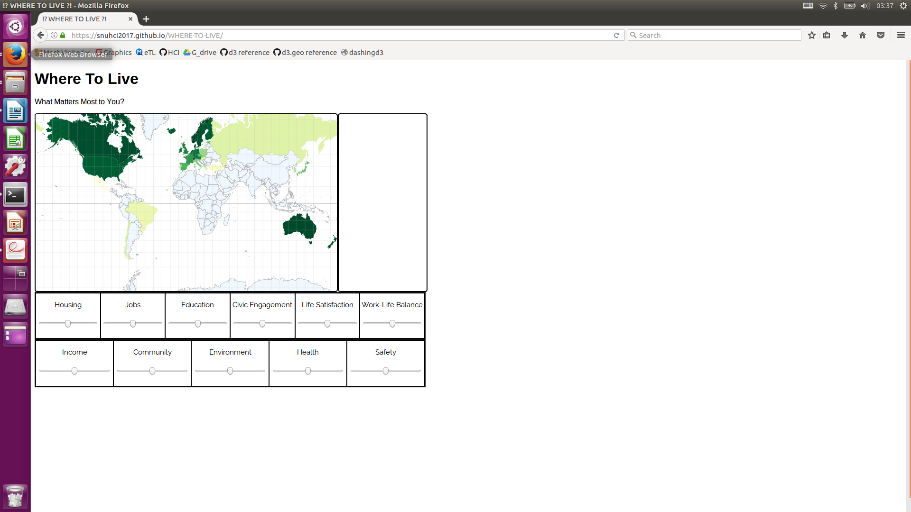

WHERE-TO-LIVE
컴퓨터공학부 2014-18534 이선민
Demo Available here
1. Introduction
UN 통계에 따르면 2015년 기준 2억 4천 4백만 명이 넘는 인구가 출생국가가 아닌 곳에서 거주하고 있으며, 이는 2000년도에 비해 41%나 증가된 숫자이다.
다양한 기관에서 '세계에서 가장 살기 좋은 국가/ 도시'의 순위를 매해 발표하고 있지만, '가장 살기 좋은'이라는 표현보다 모호한 표현도 없을 것이다.
2억 4천 4백만 명이 넘는 인구는 저마다의 사정이 있으며 그 상황과 가치관에 따라 '살기 좋은' 국가는 당연히 다를것이다.
그러나, 이처럼 해외 거주에 대한 본인의 상황에 맞는 정보를 얻을 길이 많지 않다.
본 프로젝트는 개인의 기준에 맞추어 여러가지 조건의 중요도를 입력하면 이에 따라 세계 여러 국가의 적합도를 시각화하고자 한다.
이를 통해 이민이라는 사회적인 현상의 증가에 따라, 이를 고려하는 사람들이 합리적인 선택을 할 수 있도록 돕는 길잡이 역할을 할 것으로 기대한다.
2. Data Source & Manipulation
본 프로젝트는 OECD에 소속된 국가를 기준으로 하였으며, 각 국가별 정보는 OECD statistics에서 얻은 2016년 자료를 이용하였다.
사용자가 중요도를 결정할 수 있는 기준은 총 11개로, Housing, Jobs, Education, Civic Engagement, Life Satisfaction, Work-Life Balance, Income, Community, Environment, Health, Safety다.
각각의 기준은 1~4개의 단위가 있는 normalize된 세부기준의 값의 평균으로 구해진다.
조금 복잡하니, Jobs의 값을 구하는 방법을 예로 살펴보면 다음과 같다.
예를 들어, Jobs는 노동시장의 불안정성, 고용률, 장기 비고용율, 임금의 네가지 수치로 계산한다.
먼저, 이 네가지 수치를 각각 국가별 max, min에 따라 [0,1]의 범위로 normalize하고, 노동시장의 불안정성, 장기 비고용률과 같은 부정적인 요인은 1-x로 조정해주고, 그 후 네 값의 평균을 구하면 그것이 Jobs의 값이다.
각 기준 별 사용된 세부 기준은 다음과 같다:
Housing: Dwellings without basic facilities, Housing Expenditure, Rooms per person
Income: Household net adjusted disposable income, Household net financial wealth
Jobs: Labour market insecurity, Employment rate, Long-term unemployment rate, Personal earnings
Community: Quality of network
Education: Education attainment, Student skills, Years in education
Environment: Air pollution, Water Quality
Civig Engagement: Stakeholder engagement for developing regulations, Voter turnout
Health: Life expectancy, Self-reported health
Life satisfactio: Life satisfaction
Saftey: Felling safe walking alone at night, Homicide rate
Work-Life Balance: Employees working very long hours, Time devoted to leisure and personal care
3. Implementation
프로젝트를 진행하기 위해 구현한 것은 크게 1) 데이터를 가공해서 각 국가별 기준별 값 얻기, 2) 지도 그리기, 3) 기준의 중요도 입력(slider)을 토대로 지도상에 색 칠하기, 4) 각 국가에 대한 방사형 모형의 그림을 그리고 저장할 수 있도록 하기, 총 네가지이다.
데이터 가공 및 값 처리과정은 2에서 충분히 설명하였다고 생각하여 나머지 세가지에 대하여 간략히 살펴보자면
3-2) 기준의 중요도 입력을 토대로 지도상에 색 칠하기
본 프로젝트의 가장 중요한 것 중 하나가 바로 사람들이 각 기준을 얼마나 중요하게 생각하는지를 '살기 좋은 나라'에 반영할 수 있다는 점이다.
이를 위해서, 기준 11개의 슬라이더가 있으며 드래그를 통해 값을 바꿀 수 있다.
최초 설정값은 모든 슬라이더가 50이며, 최소0, 최대 100까지 변경이 가능하다.
국가별 적합도 점수는 ((기준의 수치* 기준의 중요도(입력))의 합)/(총 중요도의 합)으로 구해진다.
예를 들어 초기값은 모두 50이므로 모든 기준의 수치를 더하는 것과 같은 점수가 구해지고, Housing만 0으로 확내려버린다면 나머지 10개 factor들이 1/10의 가중치를 갖는 효과의 점수가 구해진다.
이렇게 구해진 국가점수의 min과 max는 각각 제일 연한 노란색과 제일 진한 초록색에 대응되고, 그 사이를 score가 linear 하게 mapping하여 지도에 색이 칠해진다.
3-3) 지도 그리기
지도를 그리는 방식은 topojson을 사용하였다.
3-4) 방사형 모형 그림 그리고 저장기능 구현하기
방사형 다이어그램은 정11각형에 각 기준의 값의 크기를 나타내는 그림이다.
국가점수는 data manipulation에서 이미했으므로, 삼각함수를 이용하여 11각형의 각 꼭짓점의 위치를 계산하고 선분을 잇고, 삼각형으로 색을 칠하였다.
본 시각화에서는 국가 점수의 평균과 가중평균, 두개의 방사형 다이어그램을 그리고, 마우스가 가장 최근에 올라왔던 국가의 정보를 화면에 표시하고, 핀 버튼을 이용해 이를 화면상에 고정할 수 있도록 하였다. 기준의 weight가 바뀌면 고정한 국가들의 가중평균또한 변화하다록 하여 여러 국가의 다이어그램을 같이 볼 수 있도록 하였다.
4. Interface

초기화면은 이와 같다.
레이아웃은 크게 제목부분, 지도와 차트가 보여지는 부분, 그리고 기준의 가중치를 조절할 수 있는 부분으로 구분할 수 있다.
마우스를 지도의 국가위에 올리면 툴팁으로 국가명이 표시되며, 줌과 드래그와 같은 기본 기능을 구현하였다.
마우스 오버를 했을때, OECD 국가일 경우에는 해당 국가의 이름과 다이어그램이 지도 오른쪽에 나타난다.
OECD국가만 지도상에 색이 칠해져있고, 해당 국가들만이 다이어그램이 나타나고, 가중치의 변화에 따라 색이 변화하므로 지도상의 색상이 선정대상임이 혼동의 여지가 없다.
즉, '어떤 국가는 마우스오버를 했을때 툴팁만 나타나고 어떤 국가는 다이어그램도 바뀌네?' 와 같은 의문 없이 자연스럽게 받아들일 수 있다.
이 다이어그램을 고정하고 싶으면 국가명 옆의 빨간색 압정마크를 누르면 된다.
실제 시뮬레이션은 여기에서 해볼 수 있다.